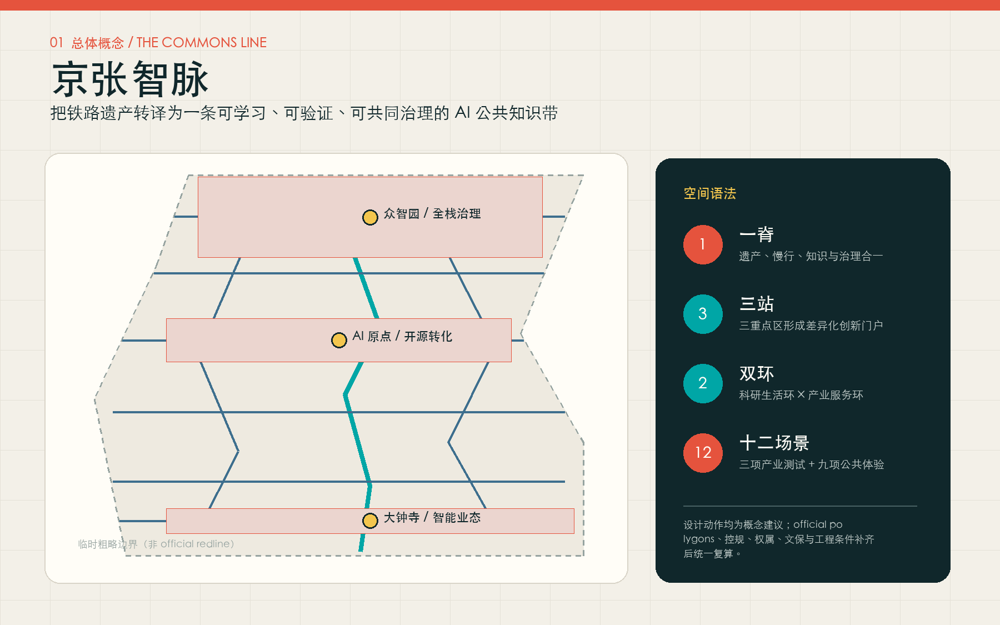
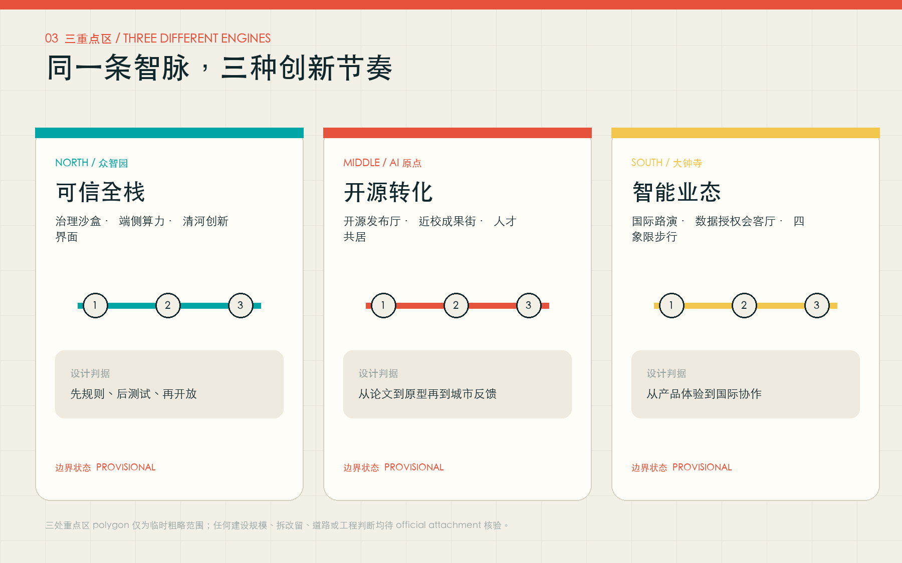
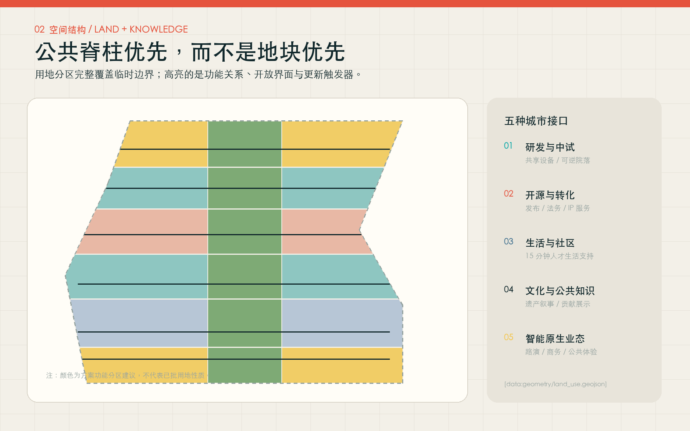
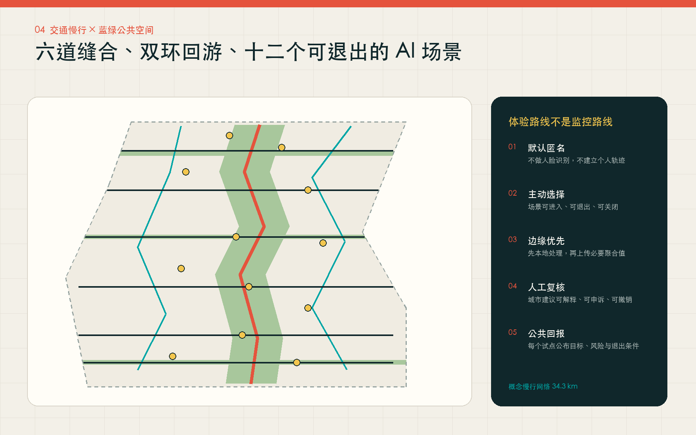
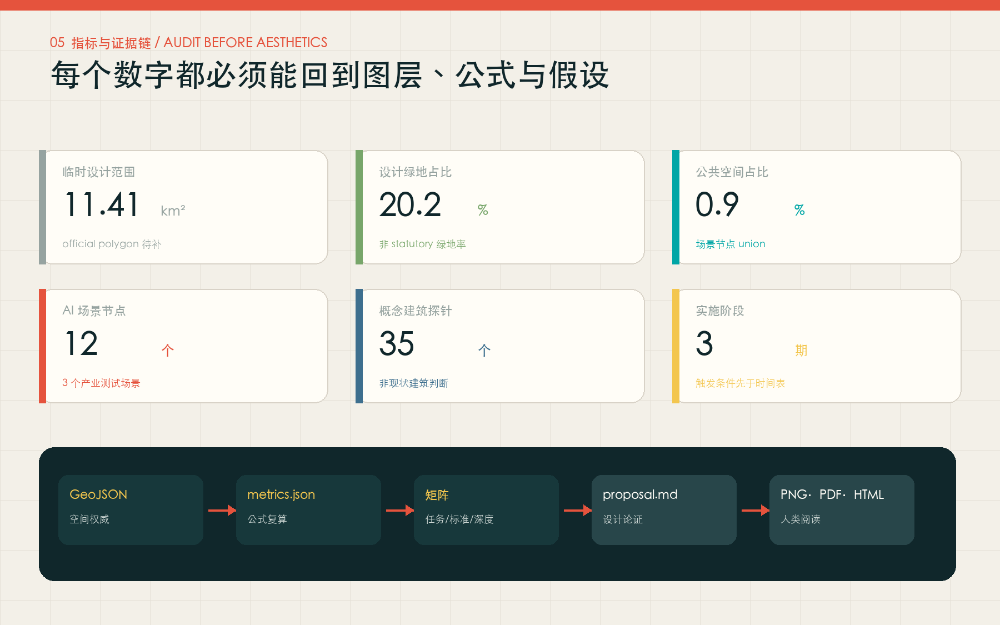

统筹研究范围 · 43.6 km²
定义创新生态与未来城市机制研究高校—开源—验证—企业—公共体验—贡献记录六个循环，回应三区两翼、命名与国际传播。
一条可学习、可验证、可共同治理的 AI 公共知识带。把百年铁路遗产从线性公园转化为科研、产业、社区与公共生活共同生产知识的城市基础设施。
临时边界被降为虚线约束；高亮的是设计意图、公共关系和三重点区的差异化角色。

三个尺度构成一条连续决策链，而不是三套互不相关的成果。
研究高校—开源—验证—企业—公共体验—贡献记录六个循环，回应三区两翼、命名与国际传播。
形成完整用地、概念建筑、交通慢行、市政新基建、蓝绿公共空间、建筑风貌与分期证据。
众智园做可信全栈，AI 原点做开源转化，大钟寺做智能原生业态与国际协作。
三处 polygon 均为 provisional；建筑规模、拆改留和工程线位必须等待 official attachments。

治理沙盒、端侧算力、清河创新界面；先规则、后测试、再开放。
开源发布、近校成果街、人才服务；从论文到原型再到城市反馈。
国际路演、数据授权会客厅、四象限步行关系；从产品体验到国际协作。
公共脊柱优先，而不是地块优先；交通路线表达概念连接，不是道路红线。


建筑：35 个可逆院落仅是概念体量探针，不表达现状建筑、权属或拆改留结论。
默认匿名、主动选择、边缘优先、人工复核、公共回报；任何公共服务都保留非数字渠道。
成果发布、授权核验和贡献记录。
公共学习隔离测试、风险分级、结果可审计。
产业测试用途限定、能耗披露、数据不出域优先。
产业测试匿名聚合、可关闭、不做人脸识别。
公共交通清权材料、非承诺表达、双语解释。
国际协作生态约束优先，不替代环境评估。
公共气候IP 授权、真实问题与人工专业服务。
产业测试明示同意、用途/期限限定、可撤回。
数据治理不做个人商业推荐，保留人工窗口。
公共服务来源可追溯，设异议与纠错通道。
文化荣誉参与式设计，辅助技术不替代照护。
包容设计公开聚合指标，建议可申诉、可撤销。
公共治理每个场景必须公开问题、数据、模型、人工责任、试点期限、退出条件和评估结果。技术原型可以失败，但失败原因必须成为公共知识。
更新项目和分期均是参考方案，不构成建设、投资、招商或政府活动承诺。
导视、贡献展示、公共学习和可退出场景。前置条件：公共空间许可与数据治理规则。
治理花园、开源转化街和智能业态客厅。前置条件：official polygons、控规、权属、文保和市政。
依据真实绩效、公众参与和专业评估滚动修编，不以一次性大拆大建锁定未来。
审美服从审计：图面必须能回到 GeoJSON、metrics、矩阵、来源与假设。

公告 1.3、1.4、1.5 与 agent.1—agent.6 均映射到正文、图层、指标、A3/A0、视觉页面、来源、假设和自检。
deterministic validation、spatial review、visual packaging check、professional evidence review 均以 `self_check.json` 为最终依据。provisional warning 不等于 official approval。
项目依据来自官方公告、清权任务书、标准快照和仓库来源登记表；六个全球案例只作 background 机制参照。
official boundary、重点区 polygon、控规、道路、现状建筑、权属、文保、市政和设施底数均待补。